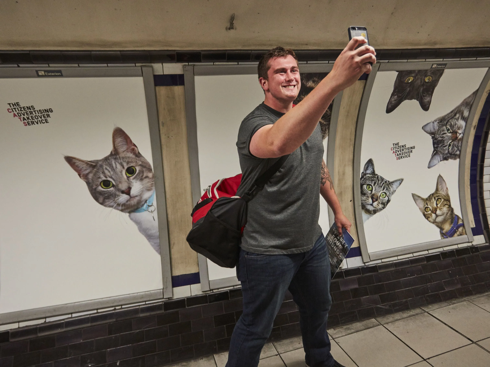
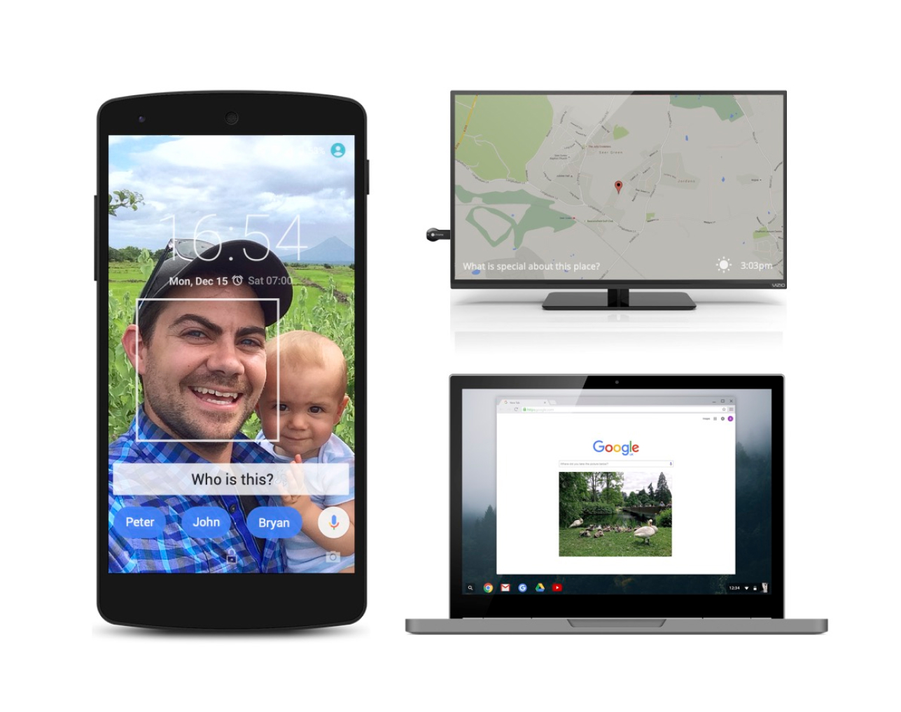
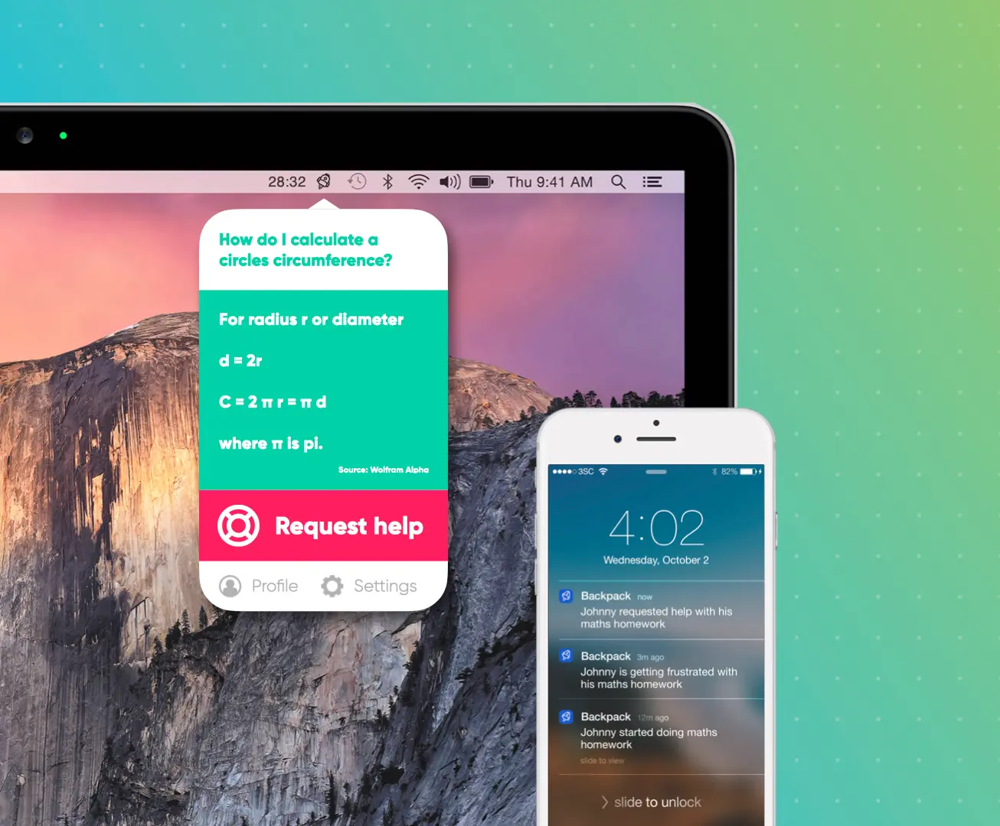
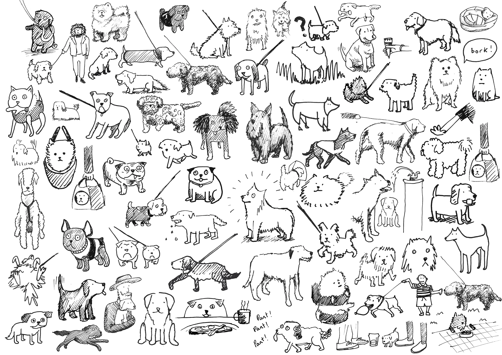

Before I built startups for a living, I built things for fun, for brands, and for no good reason at all. These are the ones worth showing.

Born from a hack day asking “what would the world look like if people coveted experiences, not things?” — we created C.A.T.S, a crowdfunded campaign to replace every advert in Clapham Common tube station with pictures of cats. I contributed copywriting, campaign strategy, and filming for the Kickstarter video.
The campaign raised £23,131 on a £0 marketing budget, was endorsed by Kickstarter as a “project we love,” approved by TfL, and installed by Exterion Media. When the posters went up, the story generated over 60,000 news articles across four continents. CNN, BBC, Washington Post, The Guardian, and every major newswire covered it. Online videos by BBC, Mic, and AJ+ received a combined 12 million views. It became one of the most-shared news stories of 2016.

Google challenged us to create a product using TensorFlow that solved a real-world problem. We started with ageing and memory loss — 20% of over-60s face mild cognitive impairment, and our increasing reliance on search may be making it worse. The insight: after years of us asking Google questions, what if Google could ask us questions?
Google Recall used computer vision and NLP to surface personal photos and generate memory-recall exercises — essentially Google Photos in reverse. Instead of finding photos by keywords, the keywords became answers to questions about each picture. The prototype used pre-applied ML to validate answers via voice or text. The concept was designed to work in the between moments of life: as a phone lock screen, a Chromecast screensaver, or within the Google Home.

The brief was open-ended: pitch a startup idea. We started with a question — how can every child reach their full potential? Our research found that smaller class sizes in private schools create tighter feedback loops, and that studying at home has three times as much impact as school. We also found a critical behavioural transition: children go from doing homework at the kitchen table to studying alone in their room, and parents lose visibility overnight.
Backpack used affective computing to read a child’s emotions and engagement through their laptop camera as they studied. Over time, this revealed individual learning habits. When frustration was detected, it could offer help or notify a parent. The business model was simple: one hour of tutoring costs £25, one year of Backpack costs £25. A 5% share of UK 12–15 year olds would generate £6.2M in annual revenue.

On joining a creative agency I needed an untainted creative outlet. I combined a passion for doodling with a newer passion for dogs. The rules were simple: draw one dog every day, from life, and share it online.
The account built a loyal following including journalists from the FT, Guardian, and The Independent, plus Olympian sprinter Jodie Williams and photographer Rankin. It was featured by BuzzFeed and given its own Twitter Moment. Someone got one of the dogs tattooed on their body. The dogs were never anatomically accurate. That was part of the charm.